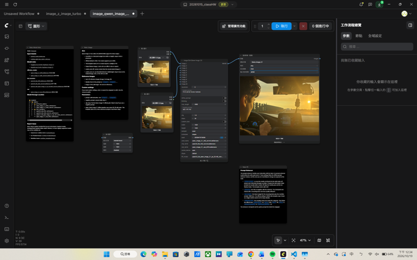

正面提示詞:First-person become handsome
負面提示詞:ugly cute boy
透過這次實作，雖然在一開始面對 ComfyUI 複雜且容易出錯的節點介面時遇到了不少挫折（甚至畫面一度消失讓人火大），但實際除錯並成功跑出生成結果後，深刻體會到了生成式 AI 在影像處理上的強大彈性。 ComfyUI 雖然學習曲線較陡峭、介面操作容錯率低，但它高度自定義的節點架構，能讓使用者清楚看懂每一個步驟（從模型載入、提示詞編碼、取樣到最後 VAE 解碼）的運作原理，對後續理解 AI 圖像生成的底層邏輯有很大的幫助。 最後我的電腦跑超久都出不來，我只好貼上自己生成的圖，雖然不是最終結果，但也算是有完成作業了。